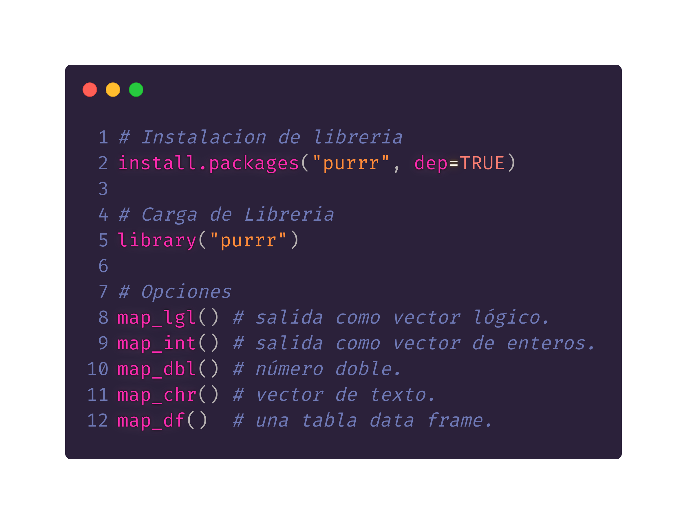
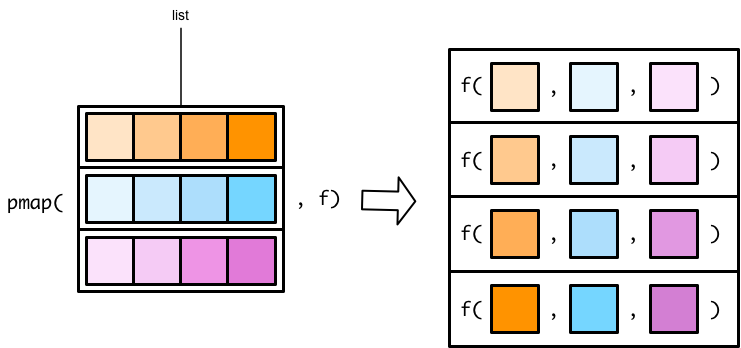

Programación en R.
Módulo 01 - Control de flujo y funciones
Agenda del Curso
Módulo 1: Introducción a la programación en R.
- Ambiente de programación.
- Tipos de datos y estructuras de datos básicos.
- Control de flujo y funciones.
Módulo 2: Manejo de datos estructurados.
- Operaciones sobre dataframes.
- Joins y funciones estadísticas.
Módulo 3: Importar y exportar archivos de datos.
- Importar y exportar archivos de datos.
- Conexión a bases de datos SQL.
Módulo 4: Visualización de datos.
- Librería ggplot2 y elementos estéticos de gráficos.
Módulo 1: Control de flujos y funciones.
Estucturas de Control.
Las estructuras de control permiten controlar el flujo de ejecución de una secuencia de comandos.
Las estructuras de control más utilizadas son:
if,elseforwhilerepeatbreaknext

- De esta forma, se puede adherir lógica en la escritura
de códigos en
Ry lograr reutilizar fragmentos de códigos una y otra vez.
Sentencia if-else
La combinación
if-elsees la más utilizada enR.ifes usado cuando se desea que una operación se ejecute unicamente cuando una condición se cumple.elsees usado para indicarle aRqué hacer en caso de la condicionifno se cumpla.


Sentencia for
En la programación imperativa es habitual construir bucles dentro de los cuales se va modificando el valor de una expresión.
La estructura
fornos permite ejecutar un bucle o loop, realizando una operación para cada elemento de un conjunto de datos.

# Ejemplo 1
for(i in 1:5){ print(i) }
# Ejemplo 2
dado <- 1:6
for(cara in dado){ dado ^ 2 }
# Ejemplo 3
x <- matrix(1:6, 2, 3)
for(i in seq_len(nrow(x))) {
for(j in seq_len(ncol(x))) {
print(x[i, j])
}
}
Código: M1_C3_script02.R
Sentencia While
Este es un tipo de bucle que ocurre mientras una condición es verdadera
TRUE.La operación se realiza hasta que se haga cumplir un criterio previamente establecido.
Mientras esta condición sea verdadera, haz estas operaciones.
# Ejemplo 1
i <- 0
while(i < 10){
print(i)
i <- i + 1 }
# Ejemplo 2
numero = 1
suma = 0
while(numero <= 10){
suma = suma + numero
numero = numero + 1 }
print(suma)
Código: M1_C3_script03.R
Sentencia Repeat-Break
El bucle
repeat()permite repetir una operación sin condiciones para verificar. Para salir, usar la palabra clavebreak.En general, no es utilizada para realizar análisis, sino cuando se realiza programación.

# Ejemplo 1
contador <- 0
repeat {
print(contador)
contador <- contador + 1
if(contador == 10) break
}
# Ejemplo 2
x <- seq(1,5)
for(i in x){
if(i == 3){ break }
print(i)
}
Código: M1_C3_script04.R
Sentencia Next
breakynextson palabras reservadas enR.breakinterrumpe un bucle,nextnos deja avanzar a la siguiente iteración del bucle, “saltándose” la actual.Ambas funcionan para
for(),while(),if()yrepeat().
# Ejemplo 1
numero <- 20
while(numero > 5){
if(numero == 15){ break }
}
print(numero)
# Ejemplo 2
for(i in 1:4) {
if(i == 3) {
next
}
print(i)
}
Código: M1_C3_script05.R
Sentencia Map()
- La función básica de purrr es:
map(list, funcion)
- El resultado, es simple ya que coge cada elemento de la lista, pero a diferencia de las funciones apply, existen apellidos de map_*() que permiten obtener directamente el resultado en otro formato.

- La función map() nos permite usar una lista como secuenciador del bucle, pero si necesitamos más de una lista, o lo que es lo mismo, hacer un bucle anidado, debemos usar otra función de purrr
map2(lista1, lista2, función(.x, .y))
x <- c(1, 2, 4)
y <- c(6, 5, 3)
purrr::map2_dbl(x, y, min)
## [1] 1 2 3
Código: M1_C3_script06.R
Sentencia Map()
Si como entrada necesitamos más de dos listas usaremos la función genérica
pmap(input_list, funcion)x <- c(1, 2, 4) y <- c(6, 5, 3) pmap_dbl(list(x, y), min)## [1] 1 2 3
Código: M1_C3_script06.R
- función
pmap

pmapes una versión generalizada demap2

Funciones
Una función, es un conjunto de instrucciones que convierten las entradas (inputs) en resultados (outputs) deseados.
Las partes de una funcion se componen en:
Entradas o argumentos.Cuerpo.Salida.

# Ejemplo 1
texto <- function(){
return("Hola curso") }
# Ejemplo 2
cuadrado <- function(x){
return(x^2)
}
# Ejemplo 3
xln <- function(x){
if (x == 0) {
return(0)
} else
{ return(-x * log(x)) }
}
Código: M1_C3_script07.R